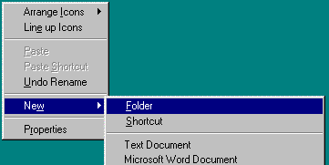
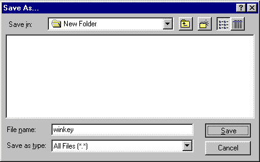

Page index / PC-MacRussian
How to type Russian on your PC -- Step One
Step One
Create a new folder on the desktop (be sure your desktop is visible) by clicking on the right mouse button and choose New --> Folder.

Now there is a folder named 'New Folder' on the desktop.
To be able to type in Russian, click here to download the zipped file for the Russian-English keyboard switcher. You may be asked how to handle this file, simply press 'save file'. Then you should see a window like this. Save the file 'winkey' into the folder 'New Folder' which was just created on the desktop and click 'Save'.

Now go to the next step.